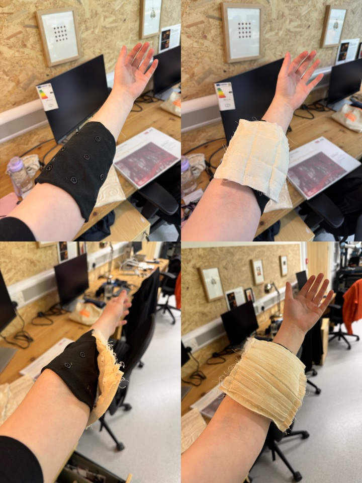

Composition, costumes, and choreography are essential elements of musical performance. While they collectively shape the artistic outcome, each can be emphasised to varying degrees or even considered independently, as they require distinct skill sets—for example, textile expertise for costume design, musical training for composition, and dance training for choreography.
This project investigates a novel artistic design process, combining music composition, costume design, and movement choreography, to create a musical costume for live performance. Typically, this would be achieved with embedded sensors and electronics, however this further compounds the skills required in the design process. Instead, the process is facilitated by wearable sensors that track human movement, and physical objects, turning passive textiles into interactive artifacts. The materials, manipulations, movements, and mappings that musicians chose to employ in the generation of a live music-and-costume composition will be explored through workshops, informing the creation of a fabrication toolkit.
